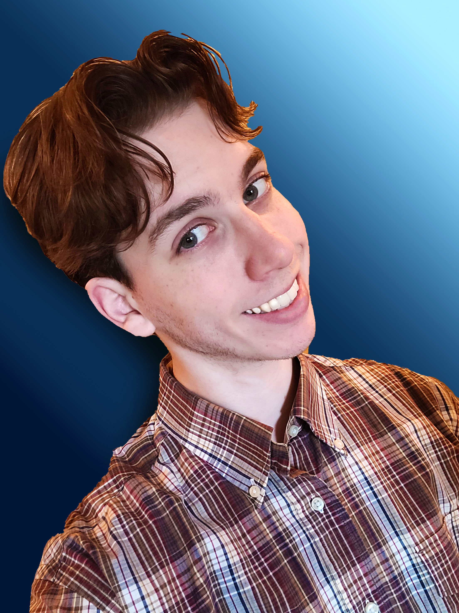
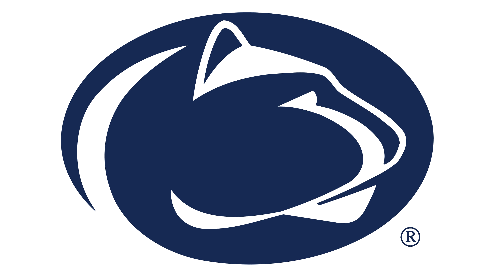
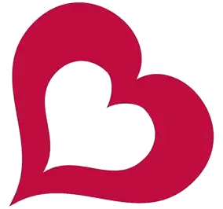
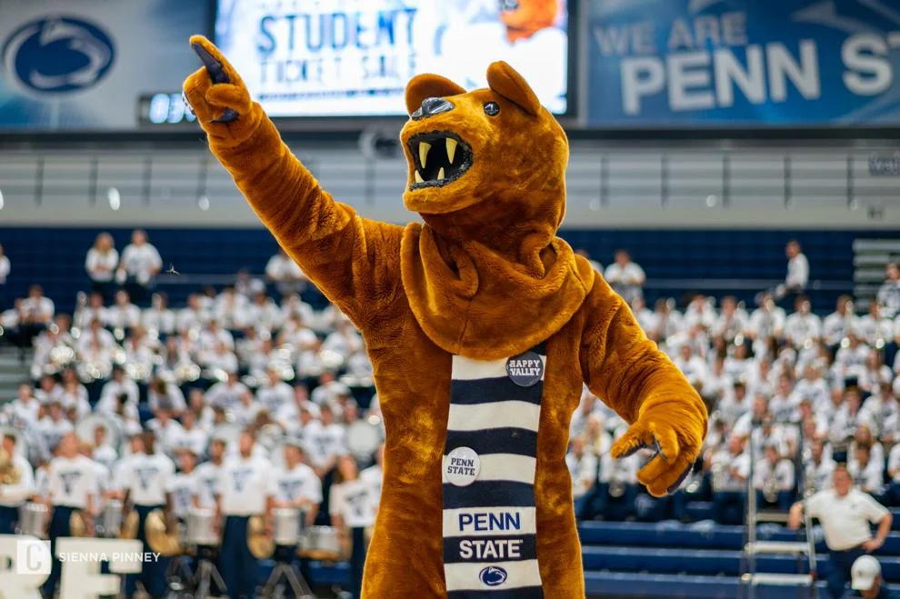

Hello —
I'm Colin, and I create, edit, and design with purpose.
Digital Media, Arts, and Technology student at Penn State University, pursuing a minor in Spanish. Self-taught video editor, graphic designer, and website builder with experience in Premiere Pro, Photoshop, After Effects, Illustrator, Blender, and more. Passionate about turning creative ideas into engaging visual content. When I'm not working on media projects, I'm usually training jiu-jitsu, learning Spanish, or playing chess.

Experience
-
August 2023 — present

Full-time Student
The Pennsylvania State University | Erie, PA
- Bachelor of Arts, Digital Media, Arts and Technology
- Pursing a minor in Spanish
- GPA, 3.9
- Dean's List, 6 semesters
-
October 2021 — present

Cashier Lead
Burlington Coat Factory | Erie, PA
- Manage and work with team members to ensure smooth operations.
- Assist customers with questions, complaints, or returns.
- Train new employees and provide bilingual support to Spanish-speaking customers.
Technical Skills
- Design & Media: Adobe Creative Cloud (Premiere Pro, After Effects, Photoshop, Illustrator), Blender 3D animation, camera operation
- Web & ProgrammingHTML, CSS, Git, GitHub, Markdown, XML, Regex

Projects
Object-goal navigation, rebuilt
Semantic mapping plus a learned exploration policy, so the robot searches a building the way a person would rather than sweeping it.
Model-predictive control for an omni-wheel base
Trajectory optimisation for a four-wheel omnidirectional platform, compared against a gradient-descent baseline on the same track.
Cup-stacking arm
Fine-tuned an imitation-learning policy on a low-cost six-axis arm over a weekend hackathon. It stacks five cups out of six.
Language-model driver in simulation
A planner that hands natural-language driving intent to a language model and converts its output into throttle and steering inside a driving simulator.
Vision-tracking mini drone
A palm-sized quadcopter that follows a marker using onboard vision and a model-based control design, built and tested in MATLAB.
Speech in, speech out
A containerised ROS 2 pipeline: speech to text, text through a local language model, answer back out as synthesised speech. Runs offline on one GPU.
Contact
Interested in my work? I'd love to connect.
colinrodonnell2@gmail.com(814)-790-0029